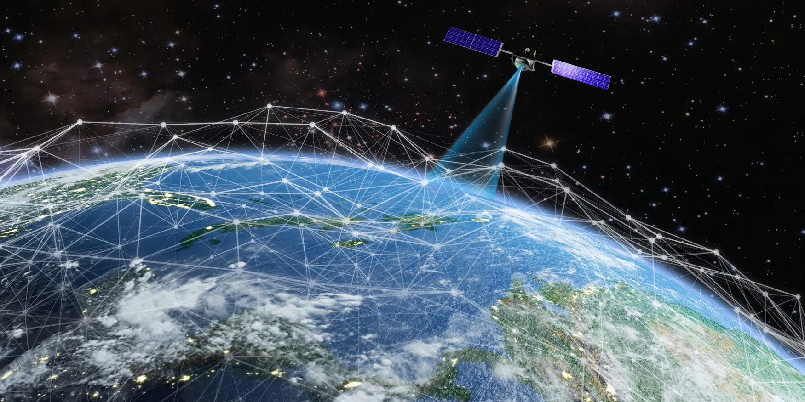

Antena terrestre

Satélite mapeamento

Instalação
GalaxyWifi é um projeto de desenvolvimento de constelação de satélites em andamento por alunos do Senac para desenvolver uma plataforma de transceptor terrestre e de satélite de baixo custo e alto desempenho para habilitar novos sistemas de comunicação baseados na Internet.
Sistemas de redes vias satélites
Antena terrestre
Satélite mapeamento
Instalação